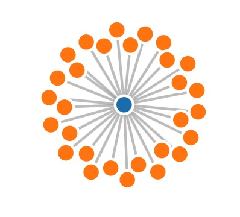

a force-directed diagram displays 10 countries with most similar scores in the selected parameter from the parallel coordinate chart for the selected country on the map. The 10 countries are also highlighted on the map with a different color. Users can also hover over the points to see a tooltip that contains the name and data selected and highlight the country in an another different color.
